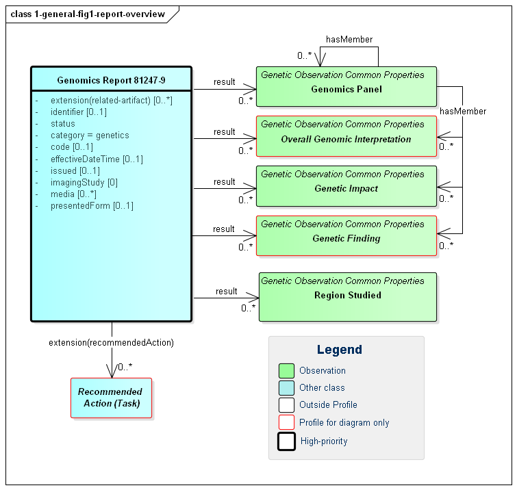
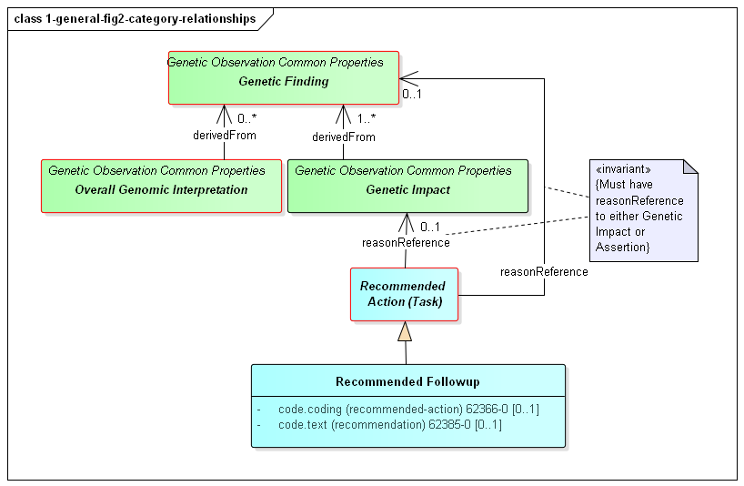
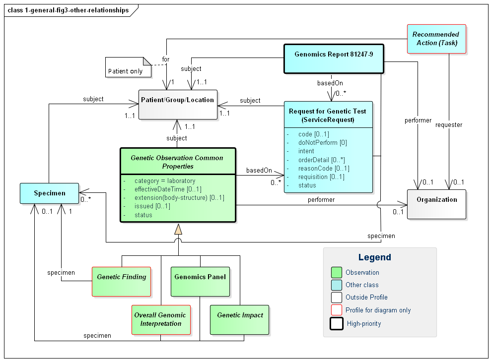
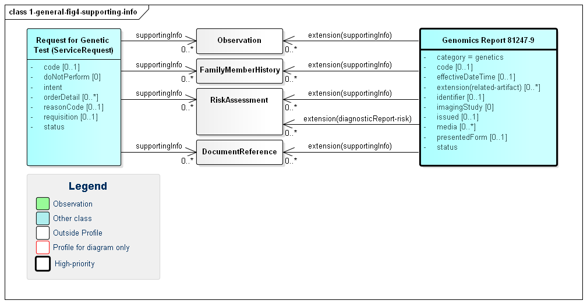
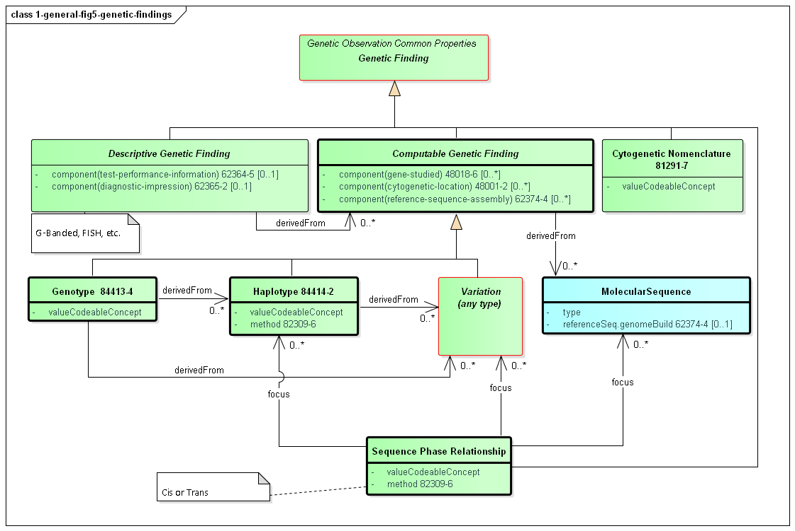
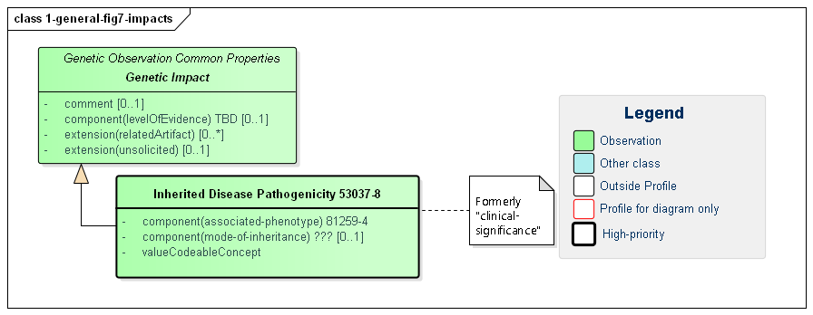

GenomicsReporting 0.3 - Continuous Build

Contents:
This section defines the "core" profiles and concepts that would be expected to be present in most genetic reports, regardless of type and how those profiles relate to each other. Concepts covered include the genomics report itself and the high-level categories of observations and other elements that make up the report, such as patient, specimen, variants, haplotypes, genotypes, etc.
The diagnostic report is the focus of all genomic reporting. It conveys metadata about the overall report (what kind of report it was, when it was written, who wrote it, final vs. draft, etc.). It also typically includes a rendered version for review by a clinician. It also groups together all "relevant" information found as part of the genomic analysis. (Rules for relevancy will depend on the type of testing ordered, the reason for testing and the policies of the lab.) The information found is expressed as FHIR Observations. These observations fall into one of five categories:
Figure 1: Genomic Report Overview
(Profile links: Genomics Report, Genetics Panel, Overall Genomic Interpretation (see Figure 6), Genetic Impact, Genetic Finding (see Figure 5), Region Studied )
| Genetic Interpretations | These are high-level observations of the result of the genetic testing. |
|---|---|
| Genetic Impacts | These represent observations about the patient based on the genetic test results. For example, "Patient may have increased susceptibility to heart attacks" |
| Genetic Findings | These are observations about the specimen's genetic characteristics. For example, a chromosomal abnormality, genotype, haplotype or variant that was detected. |
| Genetic Panel | The genetic observations can be organized and grouped together in a wide variety of ways. |
| Region Studied | These are observations describing the region or regions that were studied as part of this Genomics Report. |
In addition to the observations included in the report, some reports might also recommend specific actions be taken, such as genetic counseling, re-testing, adjusting drug dosages, etc. - driven by the results found. These are covered by the Recommended Action category and are expressed using FHIR's Task resource.
Various Observations including vital signs, lab information, assessments, genetic information, etc. result in different risk assessment. The risk assessment resource captures predicted outcomes for a patient or population on the basis of source information, and the Genomics Report has space for specifically noting this assessment under the DiagnosticReport-risk extension, which links directly to an assessment of prognosis or risk as informed by the diagnostic results (For example, genetic results and possibly by patient genetic family history information). This extension is used when one needs RiskAssessment as an alternate choice for Observation.hasMember or DiagnosticReport.result.
As shown in the diagram above, all of the observations may hang directly off of the diagnostic report However, they can also be part of a panel. In this version of the specification, no guidance is provided on when or if panels should be used. This is left up to the discretion of the reporting lab. Observations might be organized on the basis of subject, specimen, chromosome, gene, condition/disease, medication or other appropriate measure. The recursive "hasMember" relationship on panel supports a nested tree-structure of panels if appropriate, though more than two levels of panels is likely excessive.
Any organization of observations into panels or sub-panels is purely for navigation and presentation purposes. It carries no additional "meaning". Each observation can be interpreted on its own without knowing the associated panel or sub-panel. The organization of observations in panels does not assert any relationship between observations.
However, it is possible for relationships to exist between the different observation components of a genomics report. Such relationships are asserted directly on one of the affected observations. Some of these relationship types are defined on the basis of the high-level observation category the observation belongs to. Others will be defined for narrower categories or explicit observation types. The high-level category relationships are shown in the following diagram:
Figure 2: Genomic Report Category Relationships
(Profile links: Genetics Panel, Genetic Finding (see Figure 5), Genetic Impact )
The relationships between categories are as follows:
This diagram also shows a specific example of a Recommended Action - the Recommended Followup which includes suggestions for confirmatory testing, additional testing and/or genetic counselling.
To allow searching and appropriate navigation, the diagnostic report, observations and tasks cannot stand on their own. They need to be related to the associated patient and/or specimen, the order that initiated the testing, the lab that performed the testing, etc. FHIR design principles dictate that these associations be present on every resource instance. That's because each resource could be accessed on its own as part of a query response, embedded in a document or message, passed to a decision support engine, etc. However, this is still relatively lightweight because the information is included by reference only.
The following diagram shows the relationships between the diagnostic report, observations and other elements used in the profile. Note that there is no expectation that all relationships will point to the same instances. In special cases, a genetic report may involve multiple patients or multiple specimens.
Figure 3: Genomic Report Other Relationships
(Profile links: Recommended Action (see Figure 2), Genomics Report, Request for Genetic Test, Genetic Observation Common Properties, Specimen, Genetic Finding (see Figure 5), Overall Genetic Interpretation (see Figure 6), Genomics Panel, Genetic Impact )
A few key points to take from this diagram:
requisition identifier.intent element.orderDetail elementOrders for genetic tests can point to other sources of information used to support the analysis performed as part of genetic testing. Genetic reports can refer to this the information that was considered as part of the report - whether provided as part of the order or made available subsequently by the patient or clinicians or otherwise retrieved. Figure 4 (below) shows these relationships, which can be to various Observations, FamilyMemberHistory records (including records that comply with Family member history for genetics analysis and RiskAssessments. In some cases, the lab or other reporting organization may generate risk assessments as part of their reports.
Figure 4: Genomics Report Supporting Information
(Profile links: Genomics Report, Request for Genetic Test )
(Profile links: Recommended Action (see Figure 2), Genomics Report, Request for Genetic Test, Genetic Observation Common Properties, Specimen, Genetic Finding (see Figure 5), Overall Genetic Interpretation (see Figure 6), Genomics Panel, Genetic Impact, )
The primary focus of genetic testing is making Genetic Findings. These are the fine and/or coarse-grained descriptions of a specimen's genetic characteristics. It is this information that leads to the actionable Genetic Impacts and the Overall Interpretations for the report.
Figure 5: Genetic Findings
(Profile links: Recommended Action (see Figure 2), Computable Genetic Finding, Cytogenetic Nomenclature, Genotype, Haplotype, Variation (see Variant Reporting Figure 1), Sequence Phase Relationship )
Computable findings can be subdivided into three types of observations:
These categories of observations have relationships. Haplotypes can be identified based on the presence of variants. Genotypes can be identified based on the presence of haplotypes and/or variants. All three can be expressed as a combination of one or more sequences.
Genotype is used to convey corresponding haplotypes or variations at a particular locus. Many genotypes are expressed as simple strings, and can be conveyed in genotype.valueCodeableConcept.text. In some cases, genotypes are sufficiently standardized to be conveyed as codes in genotype.valueCodeableConcept.code.
TPMT *1/*3A represents the TPMT *1 haplotype (or 'star allele') on one chromosome and the TPMT *3A haplotype on the homologous chromosomeA/C represents a heterozygous "A" and a heterozygous "C" at SNP rs1142345. For HLA, KIR, and other genes in the immunogenetics domain, the National Marrow Donor Program (NMDP) led a community effort to define the Genotype List String (GL String) grammar, described here. Notably, the GL String uses '+' as a delimiter between alleles in a genotype. It also has delimiters for ambiguous genotypes, allele lists, and haplotypes.
For Pharmacogenomics, we define here a simple grammar of [HGNC gene symbol followed by white space followed by a slash ('/') delimited list of haplotype codes], where the codeSystem is set to the codeSystem of the haplotypes (e.g. Pharmvar).
Here are some examples:
<valueCodeableConcept>
<text>A/C at SNP rs1142345</text>
</valueCodeableConcept>
<valueCodeableConcept>
<coding>
<system value="http://glstring.org"/>
<version value="1.0"/>
<code value="#hla#3.23#HLA-A*01:01:01:01/HLA-A*01:02+HLA-A*24:02:01:01"/>
</coding>
</valueCodeableConcept>
<valueCodeableConcept>
<coding>
<system value="https://www.pharmvar.org/"/>
<code value=value="CYP2C9 *1A/*1A"/>
</coding>
</valueCodeableConcept>
Figure 6: Genetic Interpretations
(Profile links: Genetic Analysis Overall Coded Interpretation, Deletion-Duplication Overall Interpretation )
Overall interpretations are high-level summary observations that apply to the whole report. Typically there will only be one of each type - or at least one of each type for a given service request. Their purpose is to answer the question "Did you find anything when you did the test I asked you to do?". There are two high-level intepretations that apply to most genetic reports:
At present, impacts are noted as explicit observations about the patient/subject. However, it's not clear this is the correct approach. The work group is evaluating introducing a new resource that allows conveying "knowledge" about a variant in a patient-independent way. This would allow saying "this variant is associated with an increase risk of cardiovascular disease" rather than "based on this variant, the patient is at an increased risk of cardiovascular disease", which isn't necessarily a determination the reporting organization may wish to assert. Feedback is welcome.
Figure 7: Genetic Impacts
(Profile links: Genetic Impact, Inherited Disease Pathogenicity )
Genetic impacts are assertions of likely effects genetic results on the patient, tumor or other subject. All impacts inherit a common set of elements:
relatedArtifact supports conveying references to citations, supporting documentation and other information relevant to the assertion of the impactcomment contains additional detail and possibly qualification of the asserted impactlevelOfEvidence indicates the strength of the evidence behind the assertionOnly one impact is defined as a "common" impact. However, impacts are relevant for other areas of genetic testing including pharmacogenomics and somatics and more impact types will be defined there.
The "Inherited Disease" impact indicates the likelihood of inheritance (valueCodeableConcept) of a particular disease (the associated-phenotype) as well as how inheritance is likely to occur (mode-of-inheritance).
Here are some examples of how the levelOfEvidence component can be used (NOTE - they would be used in the appropriate, use case specific profile):
<valueCodeableConcept>
<coding>
<system value="https://www.acmg.org/"/> TODO - Need ACMG as a Code System
<code value="PS1"/>
</coding>
<coding>
<system value="https://www.acmg.org/"/>
<code value="PM2"/>
</coding>
</valueCodeableConcept>
<valueCodeableConcept>
<coding>
<system value="https://www.pharmvar.org/"/>
<code value="Level 1A"/>
</coding>
</valueCodeableConcept>
<valueCodeableConcept>
<coding>
<system value="https://www.clinicalgenome.org/mvld/"/> TODO - Need ClinGen/MVLD as a Code System
<code value="Tier1 LevelA"/>
</coding>
</valueCodeableConcept>
The profiles describing the detailed observations within a genomics report are found in the other sections of this implementation guide based on what type of testing and reporting is being done:
Many genomics reports will draw on more than one of these areas. For example, a somatic report will typically include sequencing information as well as information on likely tumor susceptibility to particular medications. Reports should draw on whatever sections are relevant.
Implementation Guide © 2017+ HL7 International Clinical Genomics Work Group. Based on FHIR version (4.0.0). IG generated on Thu, Feb 21, 2019 11:08+0100.
Links: Table of Contents |
QA Report |
Version History |
 |
Propose a change
|
Propose a change